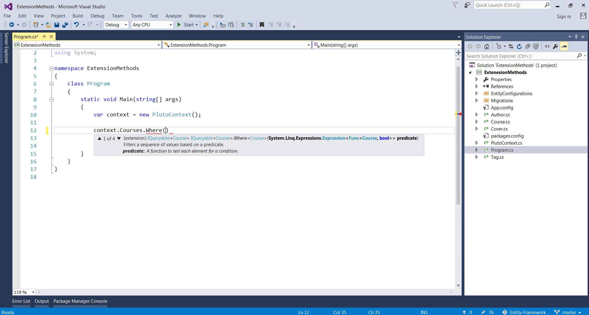
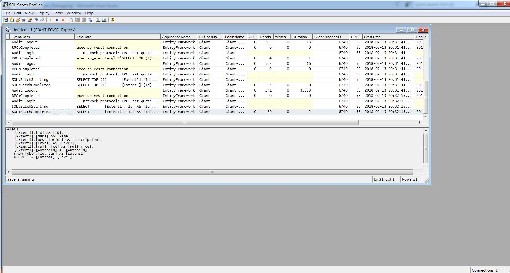

LINQ stands for Language Integrated Query. It was invented by microsoft so you can query objects. But also you can queries XML, any relational DBs and NoSQL DBs like mongodb. No matter what the source is you will use the exact same code to write queries. With LINQ the queries will be automatically translated in the language that is supported by the data store.
var context = new PlutoContext();
var query =
from c in context.Courses
where c.Name.Contains("c#")
orderby c.Name
select c;
foreach (var item in query)
{
Console.WriteLine("C# related courses are :" + item.Name);
}
var query2 =
from c in context.Courses
where c.Level == 1 && c.Author.Id == 1
select c;
var query3 =
from c in context.Courses
where c.Author.Id == 1
orderby c.Level descending, c.Name
select c;
var query4 =
from c in context.Courses
where c.Author.Id == 1
orderby c.Level descending, c.Name
select new{Name = c.Name, Author = c.Author.Name};
var query5 =
from c in context.Courses
group c by c.Level into g
select g;
foreach (var group in query5)
{
Console.WriteLine(group.Key);
foreach (var course in group)
{
Console.WriteLine("\t{0}",course.Name);
}
}
It returns the groups by level
Console.WriteLine("{0} {1}",group.Key,group.Count());
//Inner join
var query6 =
from c in context.Courses
select new { CourseName = c.Name, AuthorName = c.Author.Name };
foreach (var course in query6)
{
Console.WriteLine(course.CourseName);
Console.WriteLine(course.AuthorName);
}
//Same as above if we don't have the relation in our entity model
var query6 =
from c in context.Courses
join a in context.Authors on c.AuthorId equals a.Id
select new { CourseName = c.Name, AuthorName = a.Name };
//Group join
//How many courses each author has
var query7 =
from a in context.Authors
join c in context.Courses on a.Id equals c.AuthorId into g
select new { AuthorName = a.Name, Courses = g.Count() };
foreach (var x in query7)
{
Console.WriteLine("{0} {1}",x.AuthorName,x.Courses);
}
var query8 =
from a in context.Authors
from c in context.Courses
select new { AuthorName = a.Name, CourseName = c.Name };
foreach (var x in query8)
{
Console.WriteLine("{0} {1}", x.AuthorName, x.CourseName);
}
var courses = context.Courses
.Where(c => c.Name
.Contains("c#"))
.OrderBy(c => c.Name);
foreach (var course in courses)
{
Console.WriteLine("C# related courses are :" + course.Name);
}
Wnenever we see a Func we can use a lambda expression. 
var context = new PlutoContext();
var coursesLevel1 = context.Courses.Where(c => c.Level == 1);
foreach (var result in coursesLevel1)
{
Console.WriteLine(result.Name);
}
We have OrderBy, OrderByDescending, OrderByAscending, ThenBy, ThenByDescending, ThenByAscending
var context = new PlutoContext();
var coursesLevel1 = context.Courses
.Where(c => c.Level == 1).OrderByDescending(c=> c.Name)
.ThenByDescending(c=> c.Level);
foreach (var result in coursesLevel1)
{
Console.WriteLine(result.Name);
}
Since we have a navigation property ...Author... we don't need a join as you see below.
var context = new PlutoContext();
var coursesLevel1 = context.Courses
.Where(c => c.Level == 1).OrderByDescending(c=> c.Name)
.ThenByDescending(c=> c.Level)
.Select(c=> new { CourseName =c.Name , AuthorName = c.Author.Name });
foreach (var result in coursesLevel1)
{
Console.WriteLine(result.CourseName);
Console.WriteLine(result.AuthorName);
}
If we use Select and target property that is a list we will end up with a list of list. So we will need a foreach inside foreach.
//IQueryable is simply a list inside a list so we need a forach inside foreach
var coursesTags = context.Courses
.Where(c => c.Level == 1).OrderByDescending(c => c.Name)
.ThenByDescending(c => c.Level)
.Select(c => c.Tags );
foreach (var c in coursesTags)
{
foreach (var tag in c)
{
Console.WriteLine(tag.Name);
}
}
//To fix the above
var tags = context.Courses
.Where(c => c.Level == 1).OrderByDescending(c => c.Name)
.ThenByDescending(c => c.Level)
.SelectMany(c => c.Tags);
Console.WriteLine("*****Course Tags with SelectMany***** \n");
foreach (var t in tags)
{
Console.WriteLine(t.Name);
}
Console.WriteLine();
Return unique results with Distinct.
var uniqueTags = context.Courses
.Where(c => c.Level == 1).OrderByDescending(c => c.Name)
.ThenByDescending(c => c.Level)
.SelectMany(c => c.Tags)
.Distinct();
Console.WriteLine("*****Unique Tags with SelectMany and Distinct ***** \n");
foreach (var t in uniqueTags)
{
Console.WriteLine(t.Name);
}
Console.WriteLine();
GroupBy is used when we want to split resulsts in groups. Each group has a property called key.
var groups = context.Courses.GroupBy(c => c.Level);
Console.WriteLine("*****Grouping and GroupBy ***** \n");
foreach (var group in groups)
{
Console.WriteLine("Key " + group.Key);
foreach (var course in group)
{
Console.WriteLine(course.Name);
}
}
Console.WriteLine();
//Inner Join
//We are usingCourses with Authors with their Id and we get the course name and author name
var courses = context.Courses.Join(context.Authors,
c => c.AuthorId,
a => a.Id,
(course, author) => new
{
CourseName = course.Name,
AuthorName = author.Name
});
Console.WriteLine("*****Inner Join ***** \n");
foreach (var course in courses)
{
Console.WriteLine("Course: "+ course.CourseName);
Console.WriteLine("Author: " +course.AuthorName);
}
Console.WriteLine();
//All authors and count their courses with GroupJoin
var coursesForAuthors= context.Authors.GroupJoin(context.Courses, a => a.Id, c => c.AuthorId, (author, allCourses) => new
{
AuthorName = author.Name,
Courses = allCourses.Count()
});
Console.WriteLine("*****GroupJoin ***** \n");
foreach (var course in coursesForAuthors)
{
Console.WriteLine("{0} has {1} courses",course.AuthorName,course.Courses);
}
Console.WriteLine();
//Cross Join
//Give all authors all courses
var allCoursesToAuthors = context.Authors.SelectMany(a => context.Courses, (author, course) => new
{
AuthorName = author.Name,
CourseName = course.Name
});
It's useful when we want to return a page of records. So if we want to display courses skip first 5 and the size of each page is 10.
var limitResults = context.Courses.OrderBy(c => c.Name).Skip(5).Take(10);
foreach (var item in limitResults)
{
Console.WriteLine(item.Name);
}
Return a single object or the first object in the list. By default they are shortened by primary key. With First if this course is table or this course list is empty you will get an exception. So we use FirsrOrDefault and it's going to return null. Also we have Last or LastOrDefault
//First course that it's price is bigger than 20
var firstCourse = context.Courses.OrderBy(c => c.Name).FirstOrDefault(c => c.FullPrice > 20);
Console.WriteLine(firstCourse.Name);
Console.WriteLine();
Last CAN'T be used with SQL database but only when working with data. If you want to achieve that you short them in a descending way and then choose the first one.
We have also have Single and SingleOrDefault which will return a singel .
var singleCourse = context.Courses.Single(c => c.Id == 1);
Console.WriteLine(singleCourse.Name);
All returns a boolean. We also have Any which asks if we have any courses that satisfy this criteria.
var expensiveCourses = context.Courses.All(c => c.FullPrice > 20);
Console.WriteLine(expensiveCourses);
var anyCoursesAbove30 = context.Courses.Any(c => c.FullPrice > 30);
Console.WriteLine(anyCoursesAbove30);
Count just counts how many are in the database. Max finds the highest, Minfinds the lowest, Average counts the avrage.
var countAllCourses = context.Courses.Count(c=>c.FullPrice >100);
Console.WriteLine("We have {0} total courses above 100$",countAllCourses);
Console.WriteLine();
var mostExpensiveCourse = context.Courses.Max(c=> c.FullPrice);
Console.WriteLine("Most expensive price "+mostExpensiveCourse);
var cheapestCourse = context.Courses.Min(c => c.FullPrice);
Console.WriteLine("Cheapest price "+ cheapestCourse);
var averageCoursePrice = context.Courses.Average(c => c.FullPrice);
Console.WriteLine("The average of all courses is " + averageCoursePrice);
To see what queries we run you can check SQL server profiler as shown in Chapter 3. Queries are not executed at the time you create them but when one fo these situations happens.
So this is what we call deferred execution. Queries are not executed immediately but only when needed. One main advantage is that deferred execution enables queries to be extended.
var context = new PlutoContext();
var courses = context.Courses;
var filtered = courses.Where(c => c.Level == 1);
var sorted = filtered.OrderBy(c => c.Name);
foreach (var course in sorted)
{
Console.WriteLine(course.Name);
}
It isn't recommended to store different queries in different values but we should chain the methods we want.
There are times though that we need to execute a query because your queries cannot be translated to SQL. Check DeferredExecution project
var allBeginnerCourses = context.Courses.Where(c => c.isBeginnerCourse == true);
//Throws invalid error exception
//This is because isBeginnerCourse is a custom property and LINQ doesn;t know how
//to translate it to SQL
foreach (var course in allBeginnerCourses)
{
Console.WriteLine(course.Name);
}
To fix it we use immediate execution. This though has an impact in our application since we load all our courses from the database just to filter them in memory. In smaller applications it isn't noticeable.
var allBeginnerCourses = context.Courses.ToList().Where(c => c.isBeginnerCourse == true);
Console.WriteLine();
Console.WriteLine("Immediate Execution");
foreach (var course in allBeginnerCourses)
{
Console.WriteLine(course.Name);
}
IQueryable is an interface that derives from IEnuremable. Allows queries to be extended without being immediately executed. As we see in our project IQueryableExample since we stored it in an IQueryable the filter is part of the query. With IQueryable all expressions will be translated to SQL code and run together as a single SQL query.
var context = new PlutoContext();
IQueryable courses = context.Courses;
var filtered = courses.Where(c => c.Level == 1);
foreach (var course in filtered)
{
Console.WriteLine(course.Name);
}

IEnumerable is an interface that represents any object that can be enumerated. In simple terms it means that we can iterate over them using a for each block in C#.
If we use IEnumerable each expression will called and used immediately one by one so that makes the app heavier.